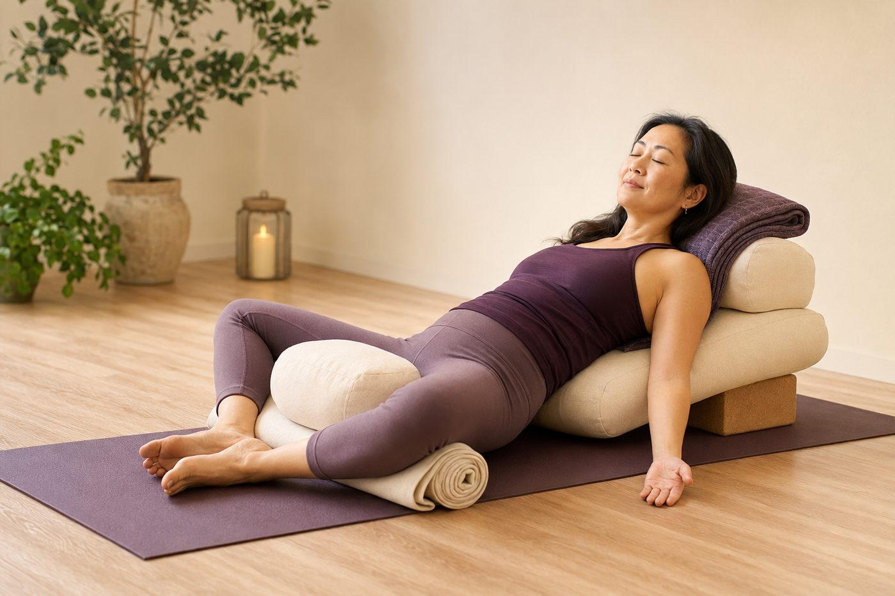

「開髖」不是把腿硬掰開：三個常見誤解

你大概看過那種畫面：老師輕鬆往下一坐就劈腿貼地，你在旁邊掰了老半天，膝蓋還是離地板遠遠的，心裡默默貼上一張「我髖很硬」的標籤。先別急著認輸——多數人對「開髖」的想像，其實從第一步就歪掉了。今天我們把三個最常見的誤解，一個一個講清楚。
誤解一：開髖，就是「把腿往兩邊掰開」？
髖關節是全身數一數二靈活的關節，它是一顆「球窩關節」：大腿骨頂端的股骨頭，像顆球一樣坐進骨盆的髖臼那個窩裡，外圈還有一圈叫髖唇的軟骨幫忙加深、固定。正因為是球坐在窩裡，它能往好多方向轉——往前抬（屈曲）、往後伸（伸展）、往外打開（外展）、往內收（內收），還能像轉門把一樣內旋、外旋。
「把腿往兩邊掰開」只用到其中一個角落：外展加外旋。你會發現，有些人劈腿劈得很漂亮，深蹲卻蹲不下去、盤腿也卡卡的——因為他們練的只是單一方向的「開度」，其他方向照樣很緊。所以開髖真正在養的，是「每個方向都能順順地動」的活動度，不是單一方向掰得多開。
而久坐族最缺的那一塊，往往不是外展，是髖前側的伸展。我們一天坐上八小時，髖一直維持在彎曲的位置，前側的髂腰肌長期被擺在縮短狀態，慢慢就「記住」了短的長度，還順手把骨盆往前拉。想更完整了解這件事，可以先看看「開髖」到底在開哪裡，你會發現該鬆的地方，跟你以為的不太一樣。
誤解二：越痛，開得越快？
這是最危險的一個。當你硬把腿往下掰、想快點「開」到底，一旦髖本身的活動度用完了，那股力量不會憑空消失，它得找地方去——不是往前擠到髖唇，就是往下壓到膝蓋內側。
先說髖唇。它是關節窩外圈那圈軟骨，工作是加深關節窩、維持穩定，偏偏血液循環差，受了傷不太容易自己修好。你猛力把腿掰到底、又往身體方向壓，股骨頭和髖臼邊緣就容易反覆夾擠，長期下來髖前側深處會悶悶地卡、悶悶地痛。再說膝蓋：當髖真的轉不出去，很多人會不自覺改從膝蓋硬凹，讓小腿去補那個角度，膝蓋內側的韌帶就這樣一次次被拉扯。
所以你以為那股痛是「正在開髖」，其實常常是膝蓋和髖唇在替髖受罪。這裡要學會分辨：拉筋時肌肉那種「痠、緊、可以靠呼吸帶開」的感覺是安全的；但如果是關節深處尖銳的痛、卡住的痛，或往別處放射的痛，那是身體在喊停，不是在進步。「越痛越有效」其實是最大的迷思，開髖尤其吃這一套的虧。
拉筋的痠可以靠呼吸帶開；關節深處尖銳、卡住、放射的痛，是喊停的訊號，不是開得更快的證明。
誤解三：開髖，只要一直把它拉軟就好？
這一個最細，也最容易被忽略。一個健康的關節，需要的從來不只是「活動度」，還要有「穩定度」。如果你只顧著拉、拉出一個很大的範圍，卻沒有練出控制這個範圍的力量，就等於把門開得很大、卻沒裝好門軸——關節能到的地方很遠，卻晃、卻不受控，反而更容易出事。
髖要穩，靠的是幾群肌肉一起上工：臀部外側的臀中肌穩住骨盆左右不塌、深層的外旋肌群管好股骨頭的位置，再加上核心的腹橫肌和多裂肌，把骨盆和脊椎鎖穩。這些「穩定班底」要是沒出勤，你拉再多，都是把地基愈掏愈空。
更有意思的是：太鬆而不穩的時候，身體其實會「用更緊來自保」。這也是為什麼有些人明明拉了好幾個月，髖卻一點都沒變鬆——因為神經系統偵測到「這裡沒人守、很危險」，乾脆把周圍的肌肉繃得更緊來當保險。你越拉，它越守，白忙一場。所以開髖真正該同時養的，是這三件事：
- 各方向的活動度——屈曲、伸展、內旋、外旋都能順，不只是掰得開。
- 穩定的力量——臀中肌、深層外旋肌、核心把骨盆守好，動得開，也要收得住。
- 身體的覺知——知道現在是在拉肌肉，還是已經頂到關節。
壁繩在這裡幫的忙很剛好：你可以抓著繩子、讓它接住一部分體重和平衡，這樣一來，你就不是整個人癱進一個被動的拉筋裡，而是能一邊往活動範圍走、一邊用腿和臀出點力去「穩住」自己。身體感覺到有支撐、有借力，那股防衛的緊才會鬆開，活動度和穩定度是一起長出來的，而不是拿一個去換另一個。
開髖不是越鬆越好，是「該動的地方能動、該穩的地方能穩」——太鬆而不穩，身體反而會用更緊來保護自己。
先看清楚你的髖，是「真的緊」還是「不敢動」
現場的 AI 體態檢測會拍下你的骨盆與下半身線條，讓你看見骨盆有沒有前傾、左右髖是不是不對稱，知道自己該先鬆哪裡、又該先穩哪裡，不用再對著地板盲目掰腿。
預約首次 NT$199 AI 體態檢測所以，你可以怎麼做
把三個誤解倒過來記就對了：開髖不是把腿掰開，是各方向都能動；不是靠痛換速度，痛多半是別的地方在受罪；也不是一味拉軟，穩定和力量一樣重要。
在家想開始，與其硬劈腿，不如先照顧被久坐綁住的髖前側：試試半跪姿——一腳跪地、一腳在前踩穩，骨盆微微收好、臀部出一點力，身體慢慢往前帶一點點，去感覺後腳那側的髖前側被溫和地拉開（是拉開，不是拉到痛）。一次停 20 到 30 秒，配幾個深呼吸就好。要老實跟你說：坐了好幾年才變緊的髖，不會一個禮拜就打開，它是每天一點點、把活動度和穩定慢慢養回來的過程。方向對了，不用急，身體會陪你慢慢走。
本頁為體態與姿勢的一般衛教與練習分享，非醫療診斷或治療。若有疼痛、舊傷或特殊病史，請先諮詢合格醫療專業人員。